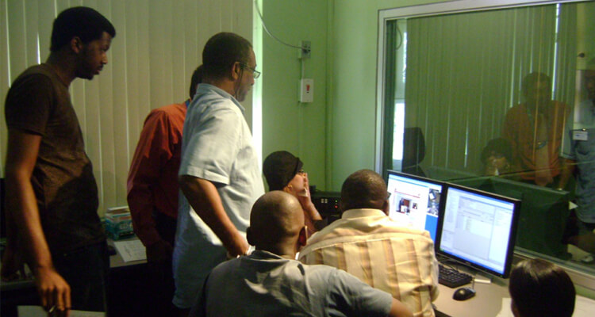

(Photo from UX Matters)
A reading on usability testing
Last week, I happened to come by a small section from Mike Kuniavsky’s book Observing the User Experience: A practitioner’s guide to user research. As a whole, the book strives to serve as a manual on the various different procedures and best practices that can help UX professionals conduct effective user research – thereby bridging the gap between who designers and developers imagine their users are, and who these users really are. In this respect, the section which I’ve chosen to analyze (entitled “How to do it” from the book’s Chapter 10, “Usability Tests”) primarily focuses on the preparation and execution stages of the usability testing process where Kuniavsky guides the readers through various steps that generally include:
- Scheduling a Usability Testing Timeline
- Recruiting Participants for the Test
- Choose Features for the Test
- Creating Tasks for the Test
- Writing Scripts for the Test
- Designing/Structuring the Physical Layout for the Test
- Moderating the Test
Some lessons I've learned
For a long time, I feel like the field of Usability Testing is something that I want to improve on. Coming from a more design-focused background, I always try to involve myself more with projects or readings that specifically focus on this discipline. Coming across this book was particularly quite a win, ans Kuniavsky very clearly lays out all the basic principles as well as procedures related to different usability testing methods. At the same time, he also provides his own recommendation on what works, what doesn't, and which method works best for different types of project requirements. Personally, below is summary of some of the main points that continue to linger in my mind following this reading. Let's start with a good quote which I feel is the core tenet of the book:
"Never go into user research to prove a point, and never create goals that seek to justify a position or reinforce a perspective. The process should aim to uncover what people really want and how they really are, not whether an opinion (whether yours or a stakeholder’s) is correct".
Attention to details is vital
Usability Testing is a process that requires a lot of attention and planning efforts from the organization which intends to execute it. Throughout the reading, Kuniavsky constantly reminds us that all the necessary preparation should be taken care of at least two to three weeks prior to the testing sessions themselves. Since any insights obtained from the usability tests will be effectively used to construct the foundation for any product development initiatives, it is vitally important that the potential collected data will be of the highest quality possible.
As such, from screening the right participants who closely fit the target audience, deciding whether to opt for a task-based or hybrid interviews, drafting interview scripts, to choosing the best physical layout given the team’s available resources, every step asks for a dedicated amount of interest and investment in order for the usability tests to be effectively and smoothly carried out.
Engage your stakeholders
It is also essential that as many stakeholders of the product being tested are encouraged to be involved throughout the process as possible. Besides the user researchers themselves, this includes designers, product/program managers, management executives developers, and ideally any members of the organization who share a keen interest in the development of the product in question.
A point that is never stressed strongly enough - engage as many stakeholders as possible throughout your usability studies. (Photo from Smashing Magazine)
How can these involvements take place? First of all, those who are directly involved with the actual building or engineering aspects of the product need to have transparent access to all the participant screeners and scripts that that will ultimately be used during the tests. Perhaps the one most important person to review these materials would be the product manager, as he/she possesses an extensive knowledge of the product features as well as its market competitive position and potential consumers. Hence, by effectively collaborating with the product manager throughout this process, the user research team will have the opportunity to optimize their understanding of the product being tested. Accordingly, they will also be able to fill in any gaps that may negatively influence the usability test results (i.e. recruiting unfitting participants, creating irrelevant tasks).
At the same time, the product’s stakeholders should also be given a chance to directly observe the usability tests as they’re being conducted. Allowing them access to the test sessions will help product managers and especially developers better recognize the flaws which exist in their products, and how these flaws will affect the general experience of the users given their needs, behavior, and contextual background.
Plan out ahead
Within a personal perspective, I definitely agree with the emphasis Kuniavsky places on attention to details and involvement of stakeholders throughout the process of conducting a usability study. While usability studies are not rocket science, it is vitally important that user researchers plan out ahead so that they can secure the best resources for the test. Planning out early also provides the team with additional space to fix any unexpected issues that may suddenly turn up. Specifically in the case of participant recruitment, Kuniavsky advises that while five participants is enough to test a specific feature, the team should be ready to recruit up to seven or eight people just in case there emerges a “bail-out” scenario.
Plan your usability studies like you would with your weddings. Be attentive to small details, work with others, and plan early.
Collaboration is key
Concurrently, meticulous planning similarly requires that the user research team collaborate cross-functionally as extensively as possible. As mentioned, the idea is to provide transparency of the project’s preparation and execution phases to various stakeholders who are either directly or indirectly involved with the product’s development. This is especially true with the former group – those who directly contribute a hand (or brain) in building up the product themselves. With perhaps the best knowledge regarding the product roadmap and its features, these individuals will offer valuable insights as to what can be done to even better prepare for the test.